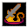

英語版 CrawlWiki の記事「Divine Armament」(0.34 向け、2026-05-26 版)の翻訳です。原文の著者は編集履歴をご覧ください。

術者に固有の熱意をそのまま映したものであるため、神から授かる武器は毎回同じものになる。
神の武装はモンスター専用の呪文で、宙を舞う武器を1本だけ召喚する。武器は斧か長柄武器のどちらかだ。呪文の威力に応じて、ウォーアックス/トライデント、電撃のバトルアックス/グレイブ、早業の処刑人の斧/バルディッシュのいずれかになる。使徒ひとりひとりが召喚できる武器の種類は、いつも同じだ。